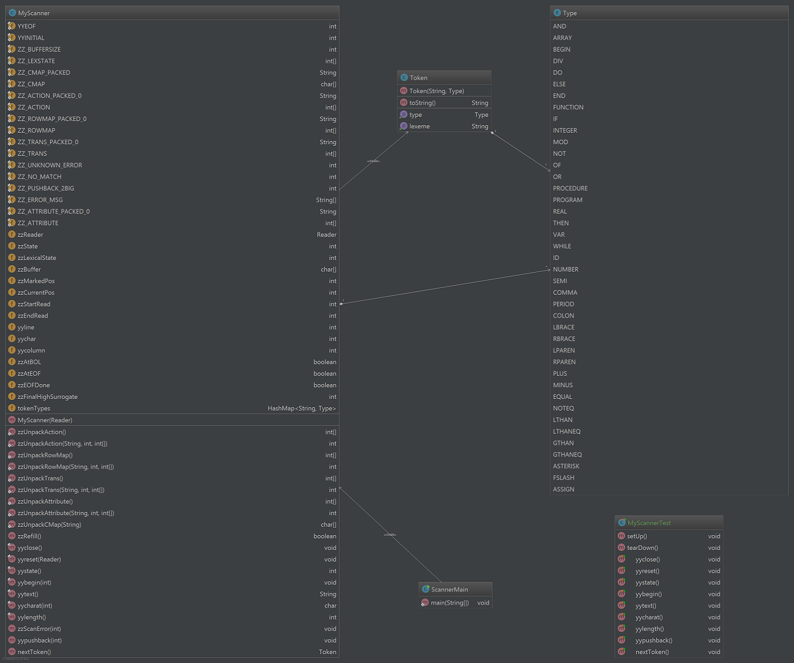

Scanner Software Design Document
Bob Laskowski
Compilers II
Dr. Erik Steinmetz
1/17/2017
Introduction
This program users JFlex to create a Scanner. JFlex takes in a particular language and grammar defined by the user
with regular expressions and converts it into java source code. The Scanner is designed to scan our modified version
of Mini-pascal. It will take in a text file and output tokens to be used later in the actual compiler.
Design
The design is rather simple. See Figure 1 for a diagram of all classes and relationships. There will be a Scanner.flex
file that contains the JFlex code. I will then run this code through JFlex to generate a MyScanner.java file. For
testing purposes there will be several text input files that contain sample Mini-pascal code, plain text, a list of
symbols, a list of numbers and IDs, and several incorrectly formatted items for the scanner to parse. These can be found
in the Input folder. The Scanner will properly parse all but the error input file. When the Scanner encounters errors it
will display an error message and exit the program.
There will also be Token.java and Type.java classes. Token defines a Token object which contains a string with the
actual lexeme and a Type. The Type is an enumerated type defined in the Type class. There is a Type for each keyword,
symbol as well as types for ID and number. See below for a list of symbols and keywords in Mini-pascal.
The scanner will recognize the following keywords and symbols:
KEYWORDS
- and
- array
- begin
- div
- do
- else
- end
- function
- if
- integer
- mod
- not
- of
- or
- procedure
- program
- real
- then
- var
- while
SYMBOLS
- ;
- ,
- .
- :
- [
- ]
- (
- )
- +
- -
- =
- <>
- <
- <=
- >
- >=
- *
- /
- :=
The lexical rules the scanner follows can be found in the following document: The
Grammar
Functionality
To use the scanner, compile the .java files to get .class files. Run this from the command line or through an IDE with a
text file as the first and only command line argument. The main function takes this file as input. The program will
output the tokens recognized to standard out. Ideally this text file should contain a Mini-pascal program.
The following is an example of a Mini-pascal program that calculates the greatest common divisor of two integers
recursively:
program example(input, output);
var x, y: integer;
function gcd(a, b: integer): integer;
begin
- if b=0 then gcd:=a
- else gcd:=gcd(b, a mod b)
end;
begin
- read(x,y);
- write(gcd(x,y))
end.
Figures
Figure 1
Change Log
- 12/6/2016 9:11PM - Initial Creation of document with different sections
- 12/7/2016 9:46PM - Added basic intro, design and functionality for first iteration
- 12/13/2016 5:33PM - Added more detailed information about all java files and added diagram